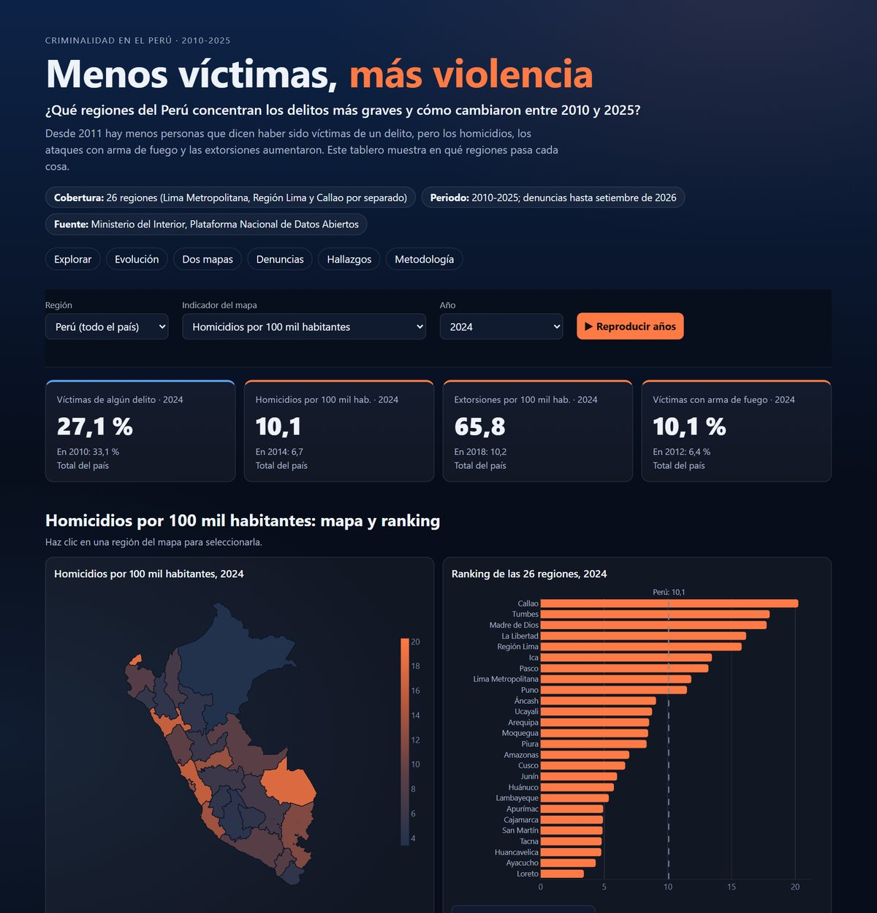

Dashboard y reel · Noviembre 2026
Menos víctimas, más violencia: la criminalidad en las 26 regiones del Perú
- Pregunta
- ¿Qué regiones concentran los delitos más graves y cómo cambiaron entre 2010 y 2025?
- Resultado
- Las víctimas de algún delito bajaron de 40,0 % (2011) a 25,3 % (2025), pero las denuncias de extorsión se multiplicaron por 8,5: de 3223 en 2018 a 27 292 en 2025.
Python · pandas · Plotly · datos abiertos del Mininter